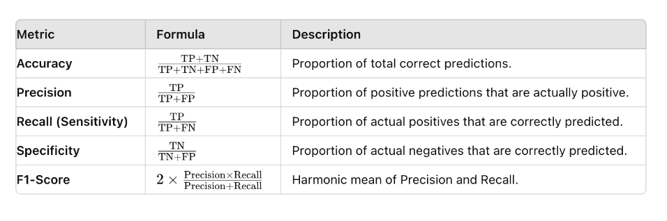

A
Auto-Encoder
Autoencoders are unsupervised ANN that can learn data encodings, making the encoder generate those encodings specifically for reconstructing its own input (See figure below.) They convert their inputs to encoded vectors that lie in a latent space that may not be continuous or allow easy interpolation. In the end, this means that regular autoencoders are mostly limited to be used to generate compressed representations of their inputs, allowing to regenerate the original input with minimal loss.

B
Backpropagation
A procedure to adjust the weights of a neural network by propagating the error obtained in the forward pass, backwards. After calculating the error in the output layer, e.g. by contrasting the output of the forward pass with the known so-called gold labels by means of a cost function, the gradient on the input weights of the last layer to the output units is calculated; then the weights of that layer are adjusted; this process is repeated backwards layer after layer until reaching the input layer.
Causality
Correlations is not causation. In ML causality tries to understand the relationships between data in order to create models that generalize well.
Confusion Matrix
A confusion matrix is a tool used to evaluate the performance of a classification model by comparing the predicted labels to the actual labels. It provides a more detailed analysis of the model's performance than simple accuracy metrics. The confusion matrix is typically presented as a table with four main outcomes:
- True Positive (TP): Correctly predicted positive instances.
- True Negative (TN): Correctly predicted negative instances.
- False Positive (FP): Incorrectly predicted positive instances (Type I error).
- False Negative (FN): Incorrectly predicted negative instances (Type II error).
By examining the values in the confusion matrix, we can calculate various evaluation metrics such as precision, recall, and F1 score, which provide insights into the model's performance for different classes. The confusion matrix is an essential tool for understanding the strengths and weaknesses of a classification model.
Example of a confusion matrix:

Main metrics derived from a confusion matrix: 
E
Expert System
Explainability
Explanation
The explicit ability expected in an intelligent agent to give "good" explanations of its decisions to humans. As usual, the problem here is to define what is a "good" explanation. If we try to mimic in the intelligent agent world, how humans proceed giving explanations to other humans, we have to acknowledge we'll have to deal with biases and/or social expectations. Some researchers argue {{ cite graaf_how_2017 }} that the framework of explanation of those agents will need to be consistent with the conceptual framework and psychological mechanisms of human behavior explanation, as humans will expect explanations falling under those two premises.
F
Feature
It's a property extracted from each data instance of a dataset being observed. An example would be the "color" attribute extracted from row coding an outfit item example from a file called seasonal_outfits.csv). Features are crucial for many ML procesess. Selecting those features it's an art, which even has a name: feature engineering. Some of the properties that a good feature should have for being selected are:
- Informative about the concept that they represent
- Discriminating, to be able to separate one example instance from another
- Independent, if possible from the other features extracted from the data instance
Feature Engineering
The classical/traditional way of "massage" the input to pass to a ML model (e.g. a classifier.) It refers to the process of using domain knowledge to extract features from raw data. This was an "art" in itself usually done by domain experts. In the age of DL, this has been substituted by the DL models themselves, which represents also the features on top of which the learning of a task is done.
Few-Shot Learning
Humans, and more specifically children, are able to learn how to transfer their experience in similar tasks to a new one by using only a small set of examples. For example a kid can learn how to multiply if she already knows how addition works and with just a bunch of examples of multiplications. It's even clearer in the world of images, in which once they have learn to recognize a particular human face, children are able to identify the same face in a bunch of photographs containing different faces.
In general, up to know, ML algorithms had to be trained in a supervised manner using a large number of examples to learn. This is not the best scenario, as this poses many limitations, from the availability of datasets for the task at hand to the energy consumption used for training those models.
Few-Shot Learning (FSL) [fei-fei_one-shot_2006] [fink_object_2004] are a type of ML problems in which a model is trained -in what is called a meta -training phase- on different related tasks. This step is supposed to give the model the ability to generalize adequately to unseen related supervised tasks using only a few bunch of new input data/examples in the testing/few-shot phase.
How many examples are considered few-shot training? [Unknown bib ref: rios_few_2018] mentions from 1 to 5.
A recent survey of few shot learning can be found in [wang_generalizing_2020]. Different subdomains of FSL can be extrapolated from the regular ML domains such as:
- Few-shot classification
- Few-shot regression
- Few-shot reinforcement learning
- ...
G
Generalization
The capability of an already trained ML model of adapting to previously unseen data taken from the same distribution as the data used to train it.
Generative Adversarial Network (GAN)
A special architecture of ANN aimed to generate new data with similar statistics as of the ones found in a particular training set. The classical example of what GANs are used for, is the generation of new faces, by interpolating new features from the data obtained from a pool of preexisting images of faces. The goal is to build the new images as real as possible, making them undistinguisable from real images for the human eye.
The idea is to train two models at the same time; the first one is the "generative" one, which serves as the "trend gatherer", that is capturing the data distribution; the second one model, called "discriminative", is trained to discern if a particular sample comes from the training data or from the "generative" moidel [goodfellow_generative_2014]

H
Hallucination
In text generation tasks, it refers to misleading statements generated by the models when outputing their results . Usually hallucinations have to do with the quality of the data the model was trained on; for example the
I
Interpretability
How well a human can understand the decisions (e.g. the output of a ML classifier) taken by an intelligent system in a given context. This is related to the extent up to which humans can predict the results of a model.
Related
L
Language Model
In any language, the words (or characters) in a sentence show certain correlations. Those correlations capture and contextualize the underlying semantics and characteristics of the particular language.
Sequences of tokens can be found almost anywhere, being the words in a text, pixels in an image, the musical notes in a score, etc. A language model could be defined as a statistical model that has learnt to predict the probability of a sequence of tokens, capturing the correlation with other nearby tokens, either consecutive or not. In NLP, the tokens use to represent words or n-grams.
The calculation of the next token in the sequence \( x_n \) can be modeled as:
\( p(x_n | x_{n-1}, x_{n-2}...x_{1}) \)
where \( x_i \) represents the ith token in the sequence.
For more information see [bengio_neural_2003].
The best language model would be that which could best predict unseen data. To measure the quality of a language model metrics such as Perplexity can be used.
Neural Network
Neuromorphic Computing
A computing approach which model neurons as asynchronous and independent computation units which are stimulated by the spikes triggered by other interconnected neurons, in a similar way as brain neurons behave.
Relying on asynchronous communication between the neurons, these neuromorphic systems do not need to rely on a system clock. So, this async communication of pulses to simulate neuron spikes is more enegy efficient, as it consumes less power.
Normalization
NN work best when input vectors/tensors are normalized, i.e. have lower mean and std in each dimension. You can do input scaling and according weight initialization, but as the training goes, the mean and standard deviation are blown up by the new inputs.
Layer normalization can be seen like a 'reset' of the weights between layers.
These are some references for weight norm [Unknown bib ref: saliman_weight_2016], batch norm [ioffe_batch_2015], layer norm [ba_layer_2016] and group norm [wu_group_2018].
O
Overfitting
The effect seen in a ML model when it seems to fit the training data so closely to the target goal that its unable to generalize well to unseen data. When a model is said to be overfitted, usually we observe a low error in the metrics from the train dataset and a high error in the metrics from the test dataset.
P
Perplexity
A measure for evaluating NLP models. It measures how good or bad a probability distribution/model predicts a sample.

R
RoC (Receiver Operating Characteristic) Curve
The Receiver Operating Characteristic (ROC) curve is a graphical representation of the trade-off between the true positive rate (sensitivity) and the false positive rate (1 - specificity) for a binary classification model.
The true positive rate (TPR) is the proportion of actual positive samples that are correctly classified as positive, while the false positive rate (FPR) is the proportion of actual negative samples that are incorrectly classified as positive.
The ROC curve is created by plotting the TPR against the FPR. Each point on the curve represents a different threshold, so the curve provides a visual representation of the model's performance across all possible thresholds.
The shape of the ROC curve can also provide insights into the model's performance. A curve that is closer to the top-left corner indicates a better model; a curve closer to the diagonal line represents a weaker model.
The area under the ROC curve (AUC) is commonly used to evaluate the performance of a binary classification model. An AUC of 0.5 indicates that the model performs no better than random guessing, while an AUC of 1.0 indicates a perfect classifier.
A model with a higher AUC has better discrimination ability, which means it can better distinguish between positive and negative samples.

S
Simulated Annealing
Inspired by the process of annealing in metal works, it describes a probabilistic approach to solve problems by "heating" them up and, subsequently, "cooling" them down. Let's see what this means.
The algorithmic solution of is applicable in large search domain problems with may contain several local optima points. At the core of a simulated annealing algorithm, there's a temperature variable. This variable is set up with a high value to simulate the heating process. As the algorithm proceeds with its iterations, the variable is allowed to be "cooled down". While the temperature is high, the algorithm accepts solutions that are worse than the current solution; that means in some way that is less risk averse. This allows the algorithm to jump out from locations with local optima that may be appear early when executing. Gradually, as the temperature decreases, the probability of accepting worse solutions decreases, hopefully "crystallizing" on the area of the search space where the global optimum solution is located.
More info see [kirkpatrick_optimization_1983].
SVM (Support Vector Machine)
Perceptron-based classifier. SVM learns how to separate points in the space by establishing the so-called decision boundaries. When data is separable linearly, as it shown in many examples in the ML literature, it may seem a trivial task. However, data in the real world is not always linearly separable, being randomly distributed, making it hard the process of segregating the different classes linearly. The kernel trick introduced by the SVM paper performs a mathematical trick to efficiently (in O(n)) map -for example- data from a 2-dimensional space to 3-dimensional space, where maybe it's possible to find a hyperplane that separates the different classes.
V
Variational Auto-Encoder
In contrast to a vanilla autoencoder, a Variational AutoEncoder (VAE) is a generative model that shares most of the architecture with a regular autoencoder, like Generative Adversarial Networks. Because of this, VAEs have relatively little to do with classical autoencoders (sparse or denoising autoencoders) from a mathematical point of view. VAEs have a special property (which we could call the "creativity" property) that makes them more interesting over regular autoencoders for generating outputs; their latent spaces are continuous by design, which allows random sampling and interpolation. In a generative model this is what you want in the end; randomly sample from the continuous latent space in order to "distort a bit" the input image generating an image variation, similar to the original one, but definitely not the same.
A VAE tries to maximize the probability of each X in the training set under the entire generative process according to \( P(X) = \int P(X|z; \theta)P(z)dz \)
\( P(X|z; \theta) \), allows making the dependence of X on z explicit by using the law of total probability. This
framework, called "maximum likelihood", allows to assume that if the model is likely to produce training set samples,
then it is also likely to produce similar samples, and also unlikely to produce dissimilar ones.
According to [doersch_tutorial_2016] VAEs are called "autoencoders" because the final training objective does share the encoder/decoder architecture, so it resembles a traditional autoencoder.